CiteFuse
Yingxin Lin1 and Hani Jieun Kim2
Source:vignettes/CiteFuse_BioCAsia_workshop.Rmd
CiteFuse_BioCAsia_workshop.RmdWorkshop Title
Overview
Instructors and contact information
- Yingxin Lin (yingxin.lin@sydney.edu.au)
- Hani Jieun Kim (hani.kim@sydney.edu.au)
Description
The latest breakthrough in single-cell omics is on multi-modal profiling of different biomolecule species in individual cells. Among the fast evolving biotechnologies developed for multi-modal profiling, cellular indexing of transcriptomes and epitopes by sequencing (CITE-seq) is attracting attention, especially in the field of immunology, given its ability to simultaneously quantify global gene expression and cellular proteins using RNA-sequencing and antibody-derived tags (ADTs) on single cells. While the additional protein marker information brought about by ADTs is extremely valuable, new biological insights can only be gained by developing analytic methods that fully take advantage of the complementarity between mRNA and ADT expression measured in CITE-seq.
To address this, we developed a streamlined pipeline–CiteFuse–that consists of a suite of tools for the integration and the downstream analysis of CITE-seq data. In this workshop, we will provide a hands-on experience to the CiteFuse package and cover all the steps including doublet detection, modality integration, cell type clustering, differential RNA and ADT expression analysis, ADT evaluation, and ligand–receptor interaction analysis on a publicly available CITE-seq dataset. We also demonstrate the applicability of CiteFuse package on other multi-modal data types by applying our pipeline on the recently developed ASAP-seq data.
This vignette provides a more complete description of the various tools in CiteFuse and will serve as the basis of our workshop.
Pre-requisites
Software:
- Basic knowledge of R syntax
- Familiarity with single-cell RNA-sequencing
- Familiarity with the
SingleCellExperimentclass
Background reading:
- The textbook “Orchestrating Single-Cell Analysis with Bioconductor” is a great reference for single-cell analysis using Bioconductor packages.
- CiteFuse enables multi-modal analysis of CITE-seq data
- Simultaneous epitope and transcriptome measurement in single cells
R / Bioconductor packages used
- This workshop will focus on Bioconductor packages [SingleCellExperiment] (https://bioconductor.org/packages/release/bioc/html/SingleCellExperiment.html) and CiteFuse.
Time outline
An example for a 55-minute workshop:
| Activity | Time |
|---|---|
| Introduction | 15m |
| Data processing and integration | 15m |
| Downstream analysis | 15m |
| Application of CiteFuse on ASAP-seq | 5m |
| Wrap-up and Conclusions | 5m |
Analysis
The dataset
The dataset we will be working with concerns a single-cell RNA-sequencing dataset consisting of two different experiments, which correspond to two treatments. McFaline-Figueroa et al. studied the epithelial-to-mesenchymal transition (EMT), where cells spatially migrate from the epithelium to the mesenchyme during development. This process will be described by a trajectory, reflecting the gene expression changes occurring during this migration. The authors furthermore studied both a control (Mock) condition, and a condition in the absence of transforming growth factor \(\beta\) (TGFB).
In summary, we will be predominantly investigating a CITE-seq dataset consisting of PBMCs. For simplicity, this lineage is studied in two different conditions; a control condition and a TGFB-absent condition.
First, install CiteFuse using BiocManager.
if (!requireNamespace("BiocManager", quietly = TRUE)) { install.packages("BiocManager") } BiocManager::install("CiteFuse")
library(CiteFuse) library(scater) library(SingleCellExperiment) library(DT) library(igraph) library(mclust) library(gridExtra)
We have made this public dataset available as a SingleCellExperiment object in the workshop package, which we import below.
data("CITEseq_example", package = "CiteFuse") names(CITEseq_example) #> [1] "RNA" "ADT" "HTO" lapply(CITEseq_example, dim) #> $RNA #> [1] 19521 500 #> #> $ADT #> [1] 49 500 #> #> $HTO #> [1] 4 500
Here, we start from a list of three matrices of unique molecular identifier (UMI), antibody derived tags (ADT) and hashtag oligonucleotide (HTO) count, which have common cell names. There are 500 cells in our subsetted dataset. And characteristically of CITE-seq data, the matrices are matched, meaning that for any given cell we know the expression level of their RNA transcripts (genome-wide) and its corresponding cell surface protein expression. The preprocessing function will utilise the three matrices and its common cell names to create a SingleCellExperiment object, which stores RNA data in an assay and ADT and HTO data within in the altExp slot.
sce_citeseq <- preprocessing(CITEseq_example) sce_citeseq #> class: SingleCellExperiment #> dim: 19521 500 #> metadata(0): #> assays(1): counts #> rownames(19521): hg19_AL627309.1 hg19_AL669831.5 ... hg19_MT-ND6 #> hg19_MT-CYB #> rowData names(0): #> colnames(500): AAGCCGCGTTGTCTTT GATCGCGGTTATCGGT ... TTGGCAACACTAGTAC #> GCTGCGAGTTGTGGCC #> colData names(0): #> reducedDimNames(0): #> altExpNames(2): ADT HTO
Doublet detection using CiteFuse
HTO Normalisation and Visualisation
The function normaliseExprs is used to scale the alternative expression. Here, we used it to perform log-transformation of the HTO count, by setting transform = "log".
sce_citeseq <- normaliseExprs(sce = sce_citeseq, altExp_name = "HTO", transform = "log")
Then we can perform dimension reduction on the HTO count by using runTSNE or runUMAP, then use visualiseDim function to visualise the reduced dimension plot. Our CITE-seq dataset contain data from four samples that were pooled before sequencing. The samples were multiplexed through cell hashing (Stoekius et al., 2018). The four clusters observed on reduced dimension plots equate to the four different samples.
sce_citeseq <- scater::runTSNE(sce_citeseq, altexp = "HTO", name = "TSNE_HTO", pca = TRUE) visualiseDim(sce_citeseq, dimNames = "TSNE_HTO") + labs(title = "tSNE (HTO)")

sce_citeseq <- scater::runUMAP(sce_citeseq, altexp = "HTO", name = "UMAP_HTO") visualiseDim(sce_citeseq, dimNames = "UMAP_HTO") + labs(title = "UMAP (HTO)")

Doublet identification step 1: cross-sample doublet detection
An important step in single cell data analysis is the removal of doublets. Doublets form as a result of co-encapsulation of cells within a droplet, leading to a hybrid transcriptome from two or more cells. In CiteFuse, we implement a step-wise doublet detection approach to remove doublets. We first identify the cross-sample doublets via the crossSampleDoublets function.
sce_citeseq <- crossSampleDoublets(sce_citeseq) #> number of iterations= 20 #> number of iterations= 24 #> number of iterations= 46 #> number of iterations= 50
The results of the cross sample doublets are then saved in colData as doubletClassify_between_label and doubletClassify_between_class.
table(sce_citeseq$doubletClassify_between_label) #> #> 1 2 3 4 #> 115 121 92 129 #> doublet/multiplet #> 43 table(sce_citeseq$doubletClassify_between_class) #> #> doublet/multiplet Singlet #> 43 457
We can then highlight the cross-sample doublets in our tSNE plot of HTO count.
visualiseDim(sce_citeseq, dimNames = "TSNE_HTO", colour_by = "doubletClassify_between_label")
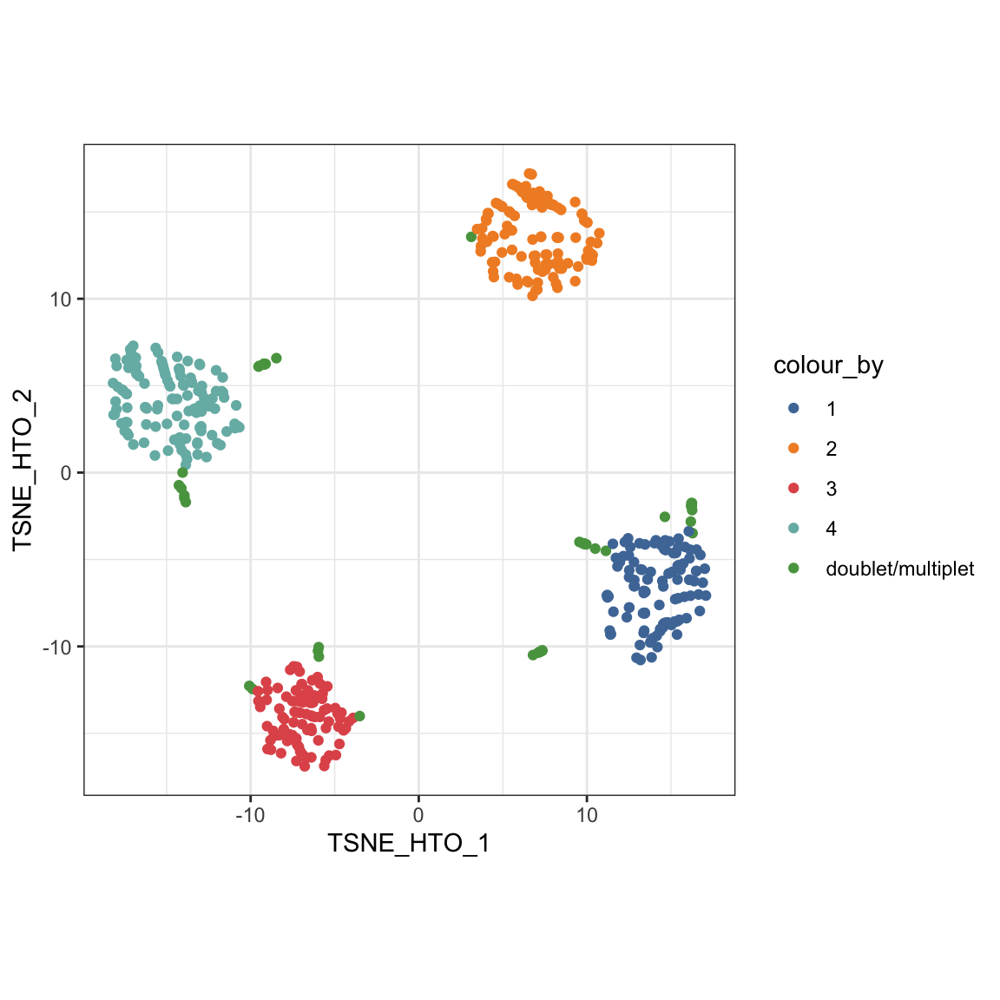
Furthermore, plotHTO function allows us to plot the pairwise scatter HTO count. Any cells that show co-expression of orthologocal HTOs (red) are considered as doublets.
plotHTO(sce_citeseq, 1:4)
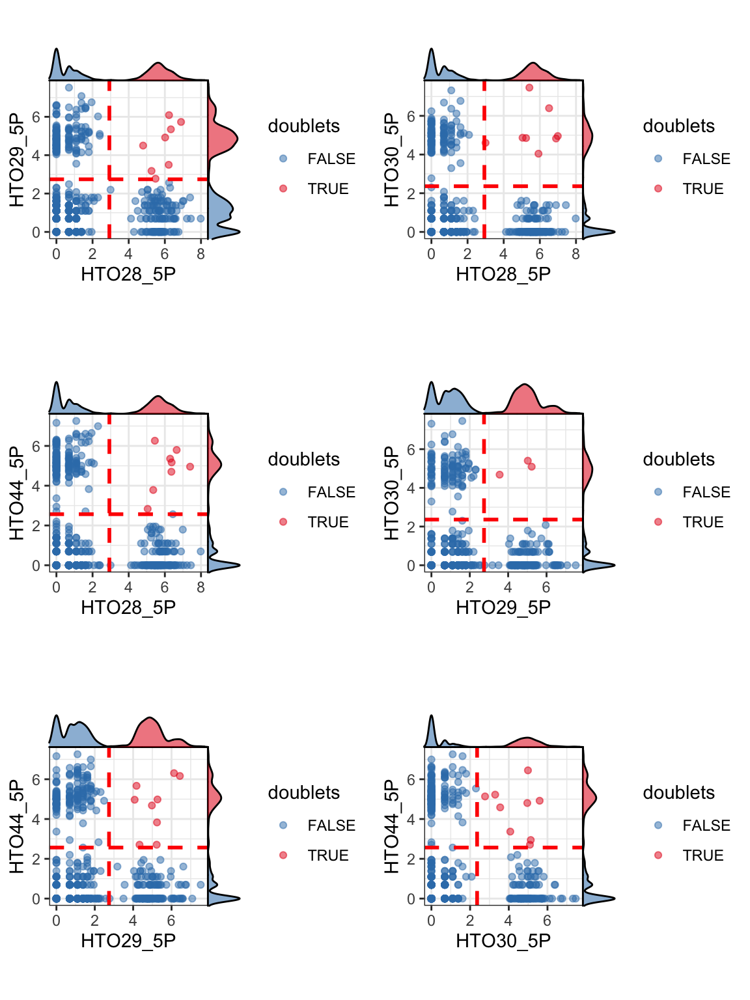
Doublet identification step 1: within-sample doublet detection
We then identify the within-sample doublets via the withinSampleDoublets function.
sce_citeseq <- withinSampleDoublets(sce_citeseq, minPts = 10)
The results of the cross sample doublets are then saved in the colData as doubletClassify_within_label and doubletClassify_within_class.
table(sce_citeseq$doubletClassify_within_label) #> #> Doublets(Within)_1 Doublets(Within)_2 Doublets(Within)_3 Doublets(Within)_4 #> 3 7 4 6 #> NotDoublets(Within) #> 480 table(sce_citeseq$doubletClassify_within_class) #> #> Doublet Singlet #> 20 480
Again, we can visualise the within-sample doublets in our tSNE plot.
visualiseDim(sce_citeseq, dimNames = "TSNE_HTO", colour_by = "doubletClassify_within_label")

Finally, we can filter out the doublet cells (both within and between batches) for the downstream analysis.
sce_citeseq <- sce_citeseq[, sce_citeseq$doubletClassify_within_class == "Singlet" & sce_citeseq$doubletClassify_between_class == "Singlet"] sce_citeseq #> class: SingleCellExperiment #> dim: 19521 437 #> metadata(3): doubletClassify_between_threshold #> doubletClassify_between_resultsMat doubletClassify_within_resultsMat #> assays(1): counts #> rownames(19521): hg19_AL627309.1 hg19_AL669831.5 ... hg19_MT-ND6 #> hg19_MT-CYB #> rowData names(0): #> colnames(437): GATCGCGGTTATCGGT GGCTGGTAGAGGTTAT ... TTGGCAACACTAGTAC #> GCTGCGAGTTGTGGCC #> colData names(5): doubletClassify_between_label #> doubletClassify_between_class nUMI doubletClassify_within_label #> doubletClassify_within_class #> reducedDimNames(2): TSNE_HTO UMAP_HTO #> altExpNames(2): ADT HTO
Clustering
Performing SNF
The first step of analysis is to integrate the RNA and ADT matrix. We use a popular integration algorithm called similarity network fusion (SNF) to integrate the multiomic data.
sce_citeseq <- scater::logNormCounts(sce_citeseq) sce_citeseq <- normaliseExprs(sce_citeseq, altExp_name = "ADT", transform = "log") system.time(sce_citeseq <- CiteFuse(sce_citeseq)) #> Calculating affinity matrix #> Performing SNF #> user system elapsed #> 5.320 0.144 5.471
We now proceed with the fused matrix, which is stored as SNF_W in our sce_citeseq object.
Performing spectral clustering
CiteFuse implements two different clustering algorithms on the fused matrix, spectral clustering and Louvain clustering. First, we perform spectral clustering with sufficient numbers of K and use the eigen values to determine the optimal number of clusters.
SNF_W_clust <- spectralClustering(metadata(sce_citeseq)[["SNF_W"]], K = 20) #> Computing Spectral Clustering plot(SNF_W_clust$eigen_values)

Using the optimal cluster number defined from the previous step, we can now use the spectralClutering function to cluster the single cells by specifying the number of clusters in K. The function takes a cell-to-cell similarity matrix as an input. We have already created the fused similarity matrix from CiteFuse. Since the CiteFuse function creates and stores the similarity matries from ADT and RNA expression, as well the fused matrix, we can use these two to compare the clustering outcomes by data modality.
SNF_W_clust <- spectralClustering(metadata(sce_citeseq)[["SNF_W"]], K = 5) #> Computing Spectral Clustering sce_citeseq$SNF_W_clust <- as.factor(SNF_W_clust$labels) SNF_W1_clust <- spectralClustering(metadata(sce_citeseq)[["ADT_W"]], K = 5) #> Computing Spectral Clustering sce_citeseq$ADT_clust <- as.factor(SNF_W1_clust$labels) SNF_W2_clust <- spectralClustering(metadata(sce_citeseq)[["RNA_W"]], K = 5) #> Computing Spectral Clustering sce_citeseq$RNA_clust <- as.factor(SNF_W2_clust$labels)
Visualisation
The outcome of the clustering can be easily visualised on a reduced dimensions plot by highlighting the points by cluster label.
sce_citeseq <- reducedDimSNF(sce_citeseq, method = "tSNE", dimNames = "tSNE_joint") g1 <- visualiseDim(sce_citeseq, dimNames = "tSNE_joint", colour_by = "SNF_W_clust") + labs(title = "tSNE (SNF clustering)") g2 <- visualiseDim(sce_citeseq, dimNames = "tSNE_joint", colour_by = "ADT_clust") + labs(title = "tSNE (ADT clustering)") g3 <- visualiseDim(sce_citeseq, dimNames = "tSNE_joint", colour_by = "RNA_clust") + labs(title = "tSNE (RNA clustering)") grid.arrange(g3, g2, g1, ncol = 2)
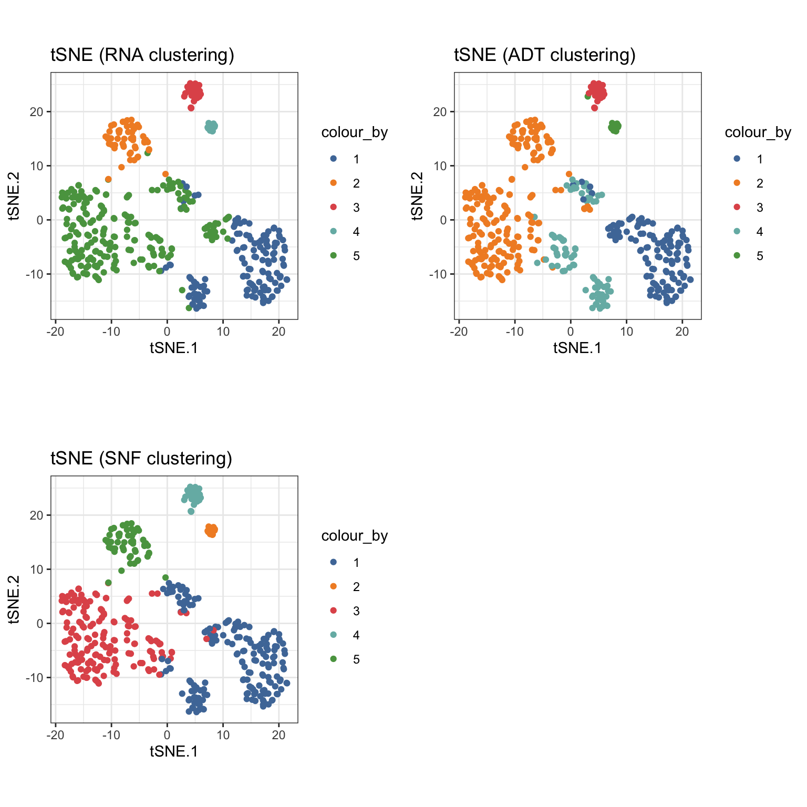
The expression of genes and proteins can be visualised by changing the colour_by parameter to assess the clusters. As an example, we highlight the plot by the RNA and ADT expression level of CD8.
g1 <- visualiseDim(sce_citeseq, dimNames = "tSNE_joint", colour_by = "hg19_CD8A", data_from = "assay", assay_name = "logcounts") + labs(title = "tSNE: hg19_CD8A (RNA expression)") g2 <- visualiseDim(sce_citeseq,dimNames = "tSNE_joint", colour_by = "CD8", data_from = "altExp", altExp_assay_name = "logcounts") + labs(title = "tSNE: CD8 (ADT expression)") grid.arrange(g1, g2, ncol = 2)

Louvain clustering
As well as spectral clustering, CiteFuse can implement Louvain clustering if users wish to use another clustering method. We use the igraph package, and any community detection algorithms available in their package can be selected by changing the method parameter.
SNF_W_louvain <- igraphClustering(sce_citeseq, method = "louvain") table(SNF_W_louvain) #> SNF_W_louvain #> 1 2 3 4 5 6 7 8 9 #> 30 52 42 31 72 56 37 88 29 sce_citeseq$SNF_W_louvain <- as.factor(SNF_W_louvain) visualiseDim(sce_citeseq, dimNames = "tSNE_joint", colour_by = "SNF_W_louvain") + labs(title = "tSNE (SNF louvain clustering)")

visualiseKNN(sce_citeseq, colour_by = "SNF_W_louvain")
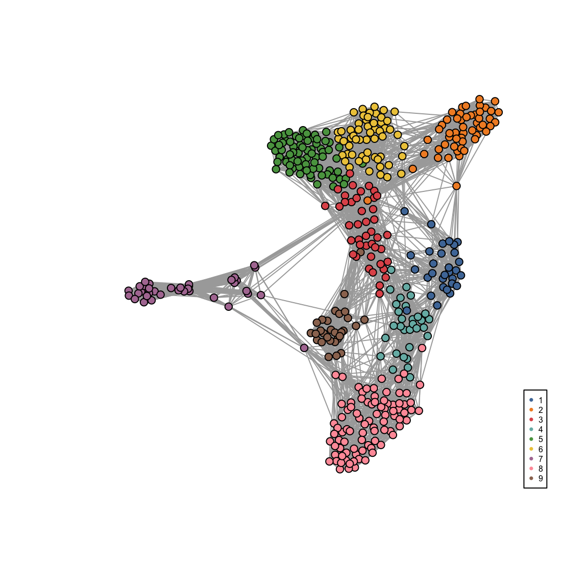
Differential Expression Analysis
Exploration of feature expression
CiteFuse has a wide range of visualisation tools to facilitate exploratory analysis of CITE-seq data. The visualiseExprs function is an easy-to-use function to generate boxplots, violinplots, jitter plots, density plots, and pairwise scatter/density plots of genes and proteins expressed in the data. The plots can be grouped by using the cluster labels stored in the sce_citeseq object.
visualiseExprs(sce_citeseq, plot = "boxplot", group_by = "SNF_W_louvain", feature_subset = c("hg19_CD2", "hg19_CD4", "hg19_CD8A", "hg19_CD19"))
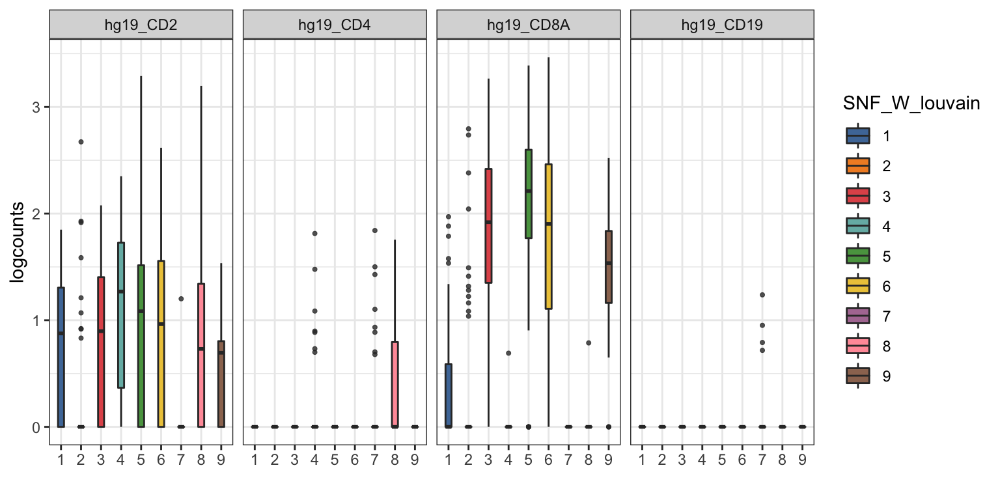
visualiseExprs(sce_citeseq, plot = "violin", group_by = "SNF_W_louvain", feature_subset = c("hg19_CD2", "hg19_CD4", "hg19_CD8A", "hg19_CD19"))
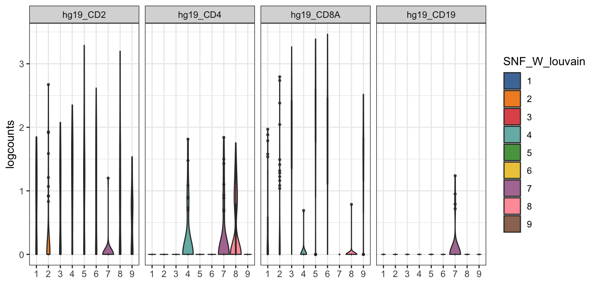
visualiseExprs(sce_citeseq, plot = "jitter", group_by = "SNF_W_louvain", feature_subset = c("hg19_CD2", "hg19_CD4", "hg19_CD8A", "hg19_CD19"))
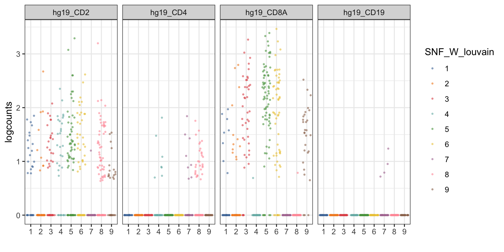
visualiseExprs(sce_citeseq, plot = "density", group_by = "SNF_W_louvain", feature_subset = c("hg19_CD2", "hg19_CD4", "hg19_CD8A", "hg19_CD19"))
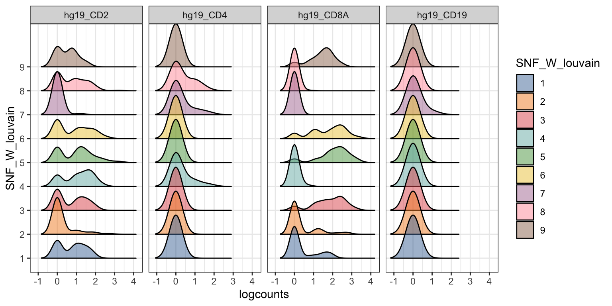
visualiseExprs(sce_citeseq, altExp_name = "ADT", group_by = "SNF_W_louvain", plot = "violin", n = 5)

visualiseExprs(sce_citeseq, altExp_name = "ADT", plot = "jitter", group_by = "SNF_W_louvain", feature_subset = c("CD2", "CD8", "CD4", "CD19"))

visualiseExprs(sce_citeseq, altExp_name = "ADT", plot = "density", group_by = "SNF_W_louvain", feature_subset = c("CD2", "CD8", "CD4", "CD19"))
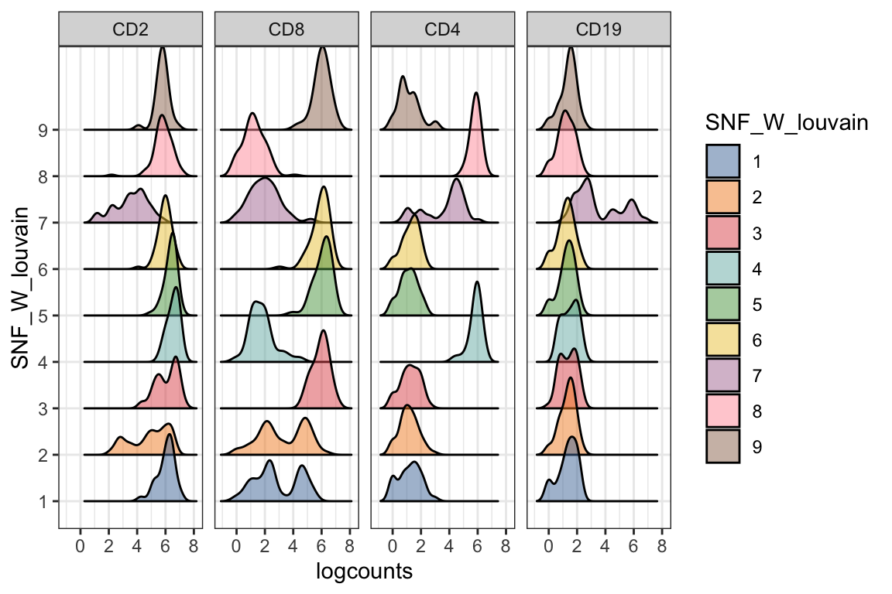
visualiseExprs(sce_citeseq, altExp_name = "ADT", plot = "pairwise", feature_subset = c("CD4", "CD8")) #> number of iterations= 12 #> number of iterations= 18
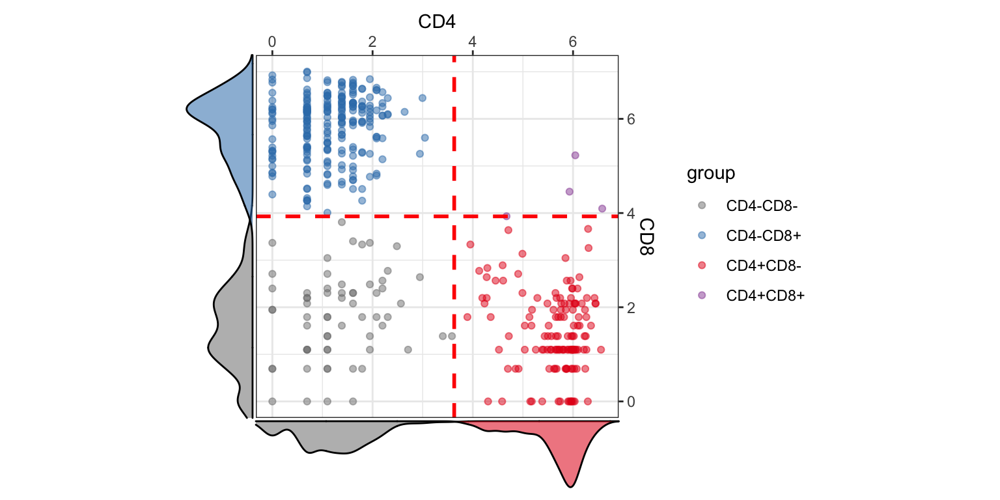
visualiseExprs(sce_citeseq, altExp_name = "ADT", plot = "pairwise", feature_subset = c("CD45RA", "CD4", "CD8"), threshold = rep(4, 3))

Perform DE Analysis with Wilcoxon Rank Sum test
CiteFuse also calculates differentially expressed (DE) genes through the DEgenes function. The cluster grouping to use must be specified in the group parameter. If altExp_name is not specified, RNA expression will be used as the default expression matrix.
Results form the DE analysis is stored in sce_citeseq as DE_res_RNA_filter and DE_res_ADT_filter for RNA and ADT expression, respectively.
For RNA expression
# DE will be performed for RNA if altExp_name = "none" sce_citeseq <- DEgenes(sce_citeseq, altExp_name = "none", group = sce_citeseq$SNF_W_louvain, return_all = TRUE, exprs_pct = 0.5) sce_citeseq <- selectDEgenes(sce_citeseq, altExp_name = "none") datatable(format(do.call(rbind, metadata(sce_citeseq)[["DE_res_RNA_filter"]]), digits = 2))
For ADT count
sce_citeseq <- DEgenes(sce_citeseq, altExp_name = "ADT", group = sce_citeseq$SNF_W_louvain, return_all = TRUE, exprs_pct = 0.5) sce_citeseq <- selectDEgenes(sce_citeseq, altExp_name = "ADT") datatable(format(do.call(rbind, metadata(sce_citeseq)[["DE_res_ADT_filter"]]), digits = 2))
Visualising DE Results
The DE genes can be visualised with the DEbubblePlot and DEcomparisonPlot. In each case, the gene names must first be extracted from the DE result objects.
circlepackPlot
The circlepackPlot takes a list of all DE genes from RNA and ADT DE analysis and will plot only the top most significant DE genes to plot.
rna_DEgenes <- metadata(sce_citeseq)[["DE_res_RNA_filter"]] adt_DEgenes <- metadata(sce_citeseq)[["DE_res_ADT_filter"]] rna_DEgenes <- lapply(rna_DEgenes, function(x){ x$name <- gsub("hg19_", "", x$name) x}) DEbubblePlot(list(RNA = rna_DEgenes, ADT = adt_DEgenes))
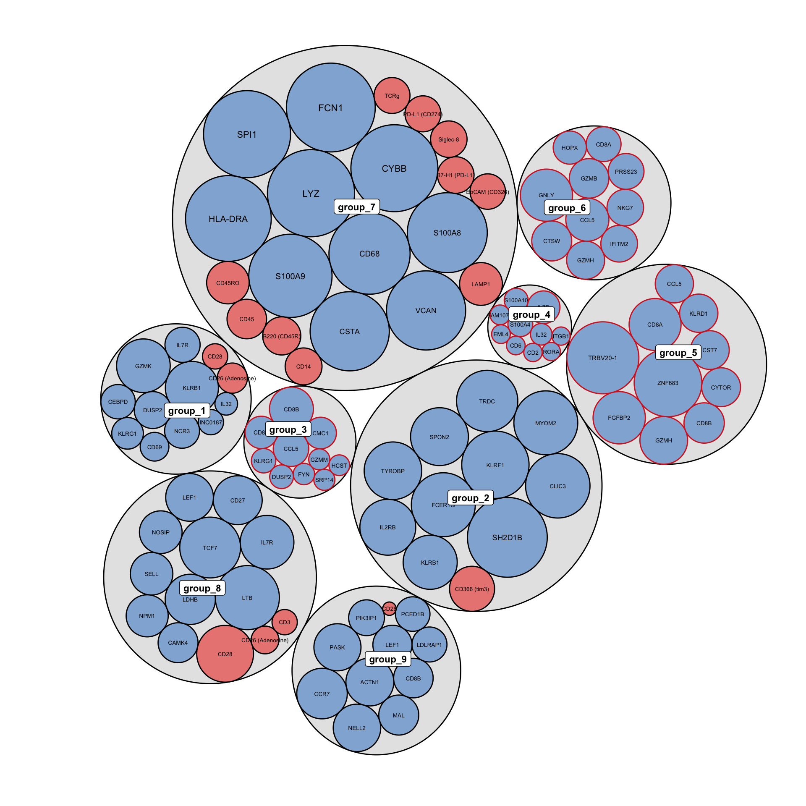
DEcomparisonPlot
For the DEcomparisonPlot, as well as a list containing the DE genes for RNA and ADT, a feature_list specifying the genes and proteins of interest is required.
rna_list <- c("hg19_CD4", "hg19_CD8A", "hg19_HLA-DRB1", "hg19_ITGAX", "hg19_NCAM1", "hg19_CD27", "hg19_CD19") adt_list <- c("CD4", "CD8", "MHCII (HLA-DR)", "CD11c", "CD56", "CD27", "CD19") rna_DEgenes_all <- metadata(sce_citeseq)[["DE_res_RNA"]] adt_DEgenes_all <- metadata(sce_citeseq)[["DE_res_ADT"]] feature_list <- list(RNA = rna_list, ADT = adt_list) de_list <- list(RNA = rna_DEgenes_all, ADT = adt_DEgenes_all) DEcomparisonPlot(de_list = de_list, feature_list = feature_list)

ADT Importance Evaluation
An important evaluation in CITE-seq data analysis is to assess the quality of each ADT and to evaluate the contribution of ADTs towards clustering outcome. CiteFuse calculates the relative importance of ADT towards clustering outcome by using a random forest model. The higher the score of an ADT, the greater its importance towards the final clustering outcome.
set.seed(2020) sce_citeseq <- importanceADT(sce_citeseq, group = sce_citeseq$SNF_W_louvain, subsample = TRUE) visImportance(sce_citeseq, plot = "boxplot")
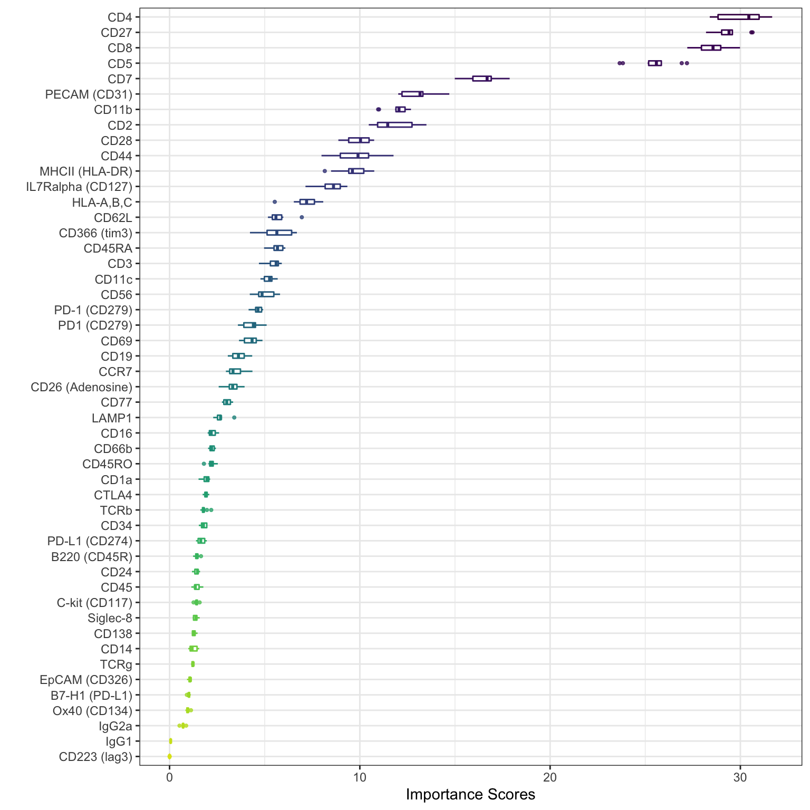
visImportance(sce_citeseq, plot = "heatmap")

sort(metadata(sce_citeseq)[["importanceADT"]], decreasing = TRUE)[1:20] #> CD4 CD27 CD8 CD5 #> 30.036201 29.449213 28.557098 25.486926 #> CD7 PECAM (CD31) CD11b CD2 #> 16.493928 12.961868 11.988086 11.766563 #> CD28 CD44 MHCII (HLA-DR) IL7Ralpha (CD127) #> 9.947612 9.788229 9.651328 8.516038 #> HLA-A,B,C CD62L CD366 (tim3) CD45RA #> 7.126189 5.710455 5.670500 5.659654 #> CD3 CD11c CD56 PD-1 (CD279) #> 5.481791 5.202686 5.024104 4.637673
The importance scores can be visualised in a boxplot and heatmap. Our evaluation of ADT importance show that unsurprisingly CD4 and CD8 are the top two discriminating proteins in PBMCs.
Let us try clustering with only ADTs with a score greater than 5.
subset_adt <- names(which(metadata(sce_citeseq)[["importanceADT"]] > 5)) subset_adt #> [1] "CD11b" "CD11c" "CD2" #> [4] "CD27" "CD28" "CD3" #> [7] "CD366 (tim3)" "CD4" "CD44" #> [10] "CD45RA" "CD5" "CD56" #> [13] "CD62L" "CD7" "CD8" #> [16] "HLA-A,B,C" "IL7Ralpha (CD127)" "MHCII (HLA-DR)" #> [19] "PECAM (CD31)" system.time(sce_citeseq <- CiteFuse(sce_citeseq, ADT_subset = subset_adt, metadata_names = c("W_SNF_adtSubset1", "W_ADT_adtSubset1", "W_RNA"))) #> Calculating affinity matrix #> Performing SNF #> user system elapsed #> 4.366 0.049 4.419 SNF_W_clust_adtSubset1 <- spectralClustering(metadata(sce_citeseq)[["W_SNF_adtSubset1"]], K = 5) #> Computing Spectral Clustering sce_citeseq$SNF_W_clust_adtSubset1 <- as.factor(SNF_W_clust_adtSubset1$labels) adjustedRandIndex(sce_citeseq$SNF_W_clust_adtSubset1, sce_citeseq$SNF_W_clust) #> [1] 0.9332215
When we compare between the two clustering outcomes, we find that the adjusted rand index is approximately 0.93, where a value of 1 denotes complete concordance.
RNA Ligand - ADT Receptor Analysis
With the advent of CITE-seq, we can now predict ligand-receptor interactions by using cell surface protein expression. CiteFuse implements a ligandReceptorTest to find ligand receptor interactions between sender and receiver cells. Importantly, the ADT count is used to predict receptor expression within receiver cells. Note that the setting altExp_name = "RNA" would enable users to predict ligand-receptor interaction from RNA expression only.
data("lr_pair_subset", package = "CiteFuse") head(lr_pair_subset) #> [,1] [,2] #> [1,] "hg19_IL17RA" "CD45" #> [2,] "hg19_FAS" "CD11b" #> [3,] "hg19_GZMK" "CD62L" #> [4,] "hg19_CD40LG" "CD11b" #> [5,] "hg19_FLT3LG" "CD62L" #> [6,] "hg19_GZMA" "CD19" sce_citeseq <- normaliseExprs(sce = sce_citeseq, altExp_name = "ADT", transform = "zi_minMax") sce_citeseq <- normaliseExprs(sce = sce_citeseq, altExp_name = "none", exprs_value = "logcounts", transform = "minMax") sce_citeseq <- ligandReceptorTest(sce = sce_citeseq, ligandReceptor_list = lr_pair_subset, cluster = sce_citeseq$SNF_W_louvain, RNA_exprs_value = "minMax", use_alt_exp = TRUE, altExp_name = "ADT", altExp_exprs_value = "zi_minMax", num_permute = 1000) #> 100 ......200 ......300 ......400 ......500 ......600 ......700 ......800 ......900 ......1000 ......
visLigandReceptor(sce_citeseq, type = "pval_heatmap", receptor_type = "ADT")
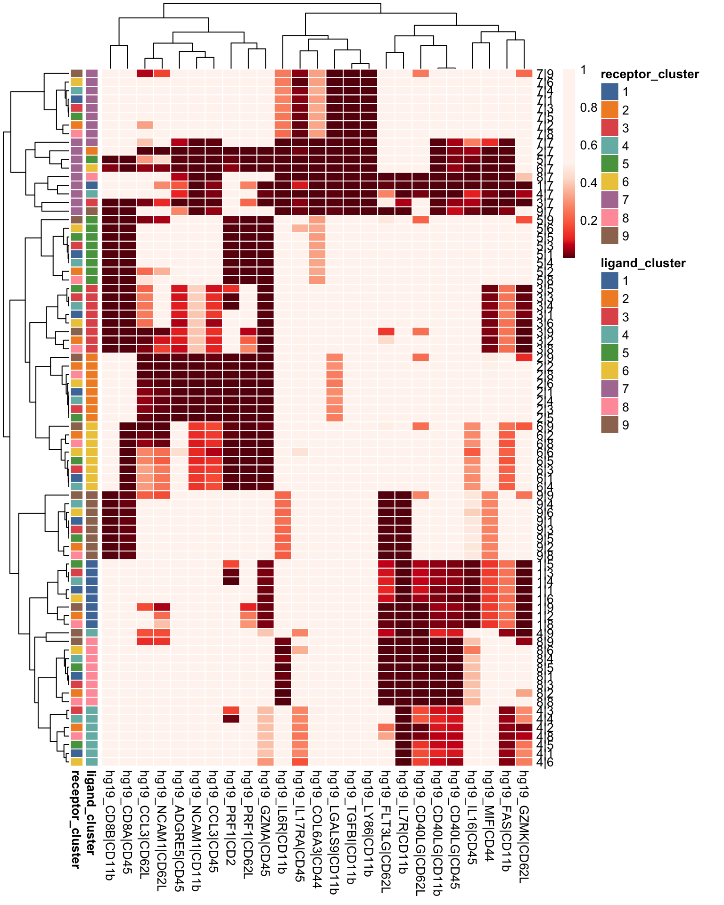
visLigandReceptor(sce_citeseq, type = "pval_dotplot", receptor_type = "ADT")
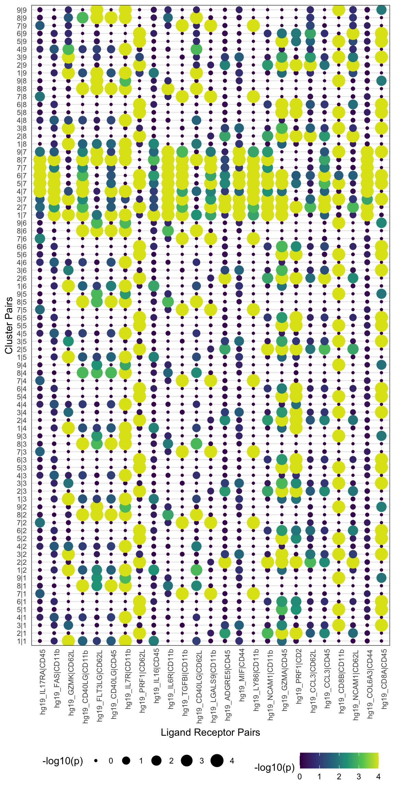
visLigandReceptor(sce_citeseq, type = "group_network", receptor_type = "ADT")

visLigandReceptor(sce_citeseq, type = "group_heatmap", receptor_type = "ADT")
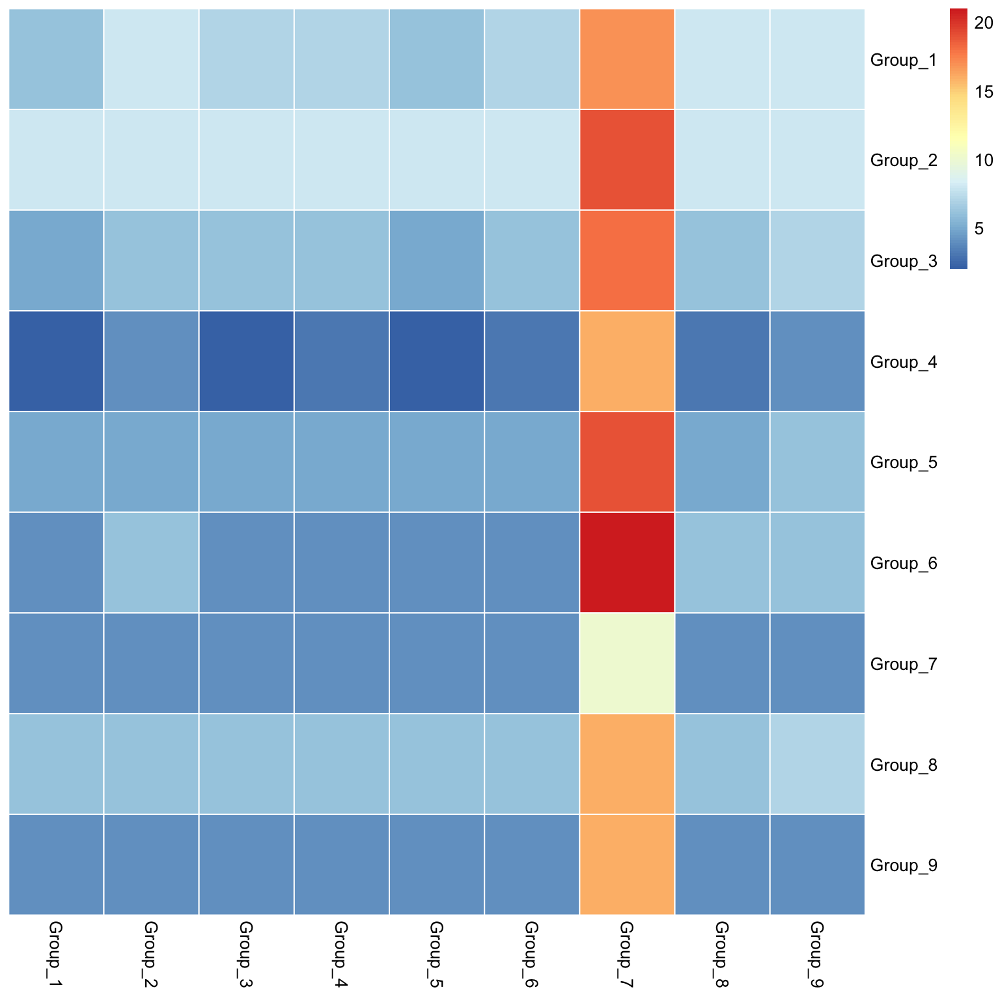
visLigandReceptor(sce_citeseq, type = "lr_network", receptor_type = "ADT")

Extension
Between-sample analysis
Lastly, we will jointly analyse the current PBMC CITE-seq data, taken from healthy human donors, and another subset of CITE-seq data from patients with cutaneous T-cell lymphoma (CTCL), again from Mimitou et al. (2019). The data sce_ctcl_subset provided in our CiteFuse package already contains the clustering information.
data("sce_ctcl_subset", package = "CiteFuse")
To visualise and compare gene or protein expression data, we can use visualiseExprsList function.
visualiseExprsList(sce_list = list(control = sce_citeseq, ctcl = sce_ctcl_subset), plot = "boxplot", altExp_name = "none", exprs_value = "logcounts", feature_subset = c("hg19_S100A10", "hg19_CD8A"), group_by = c("SNF_W_louvain", "SNF_W_louvain"))
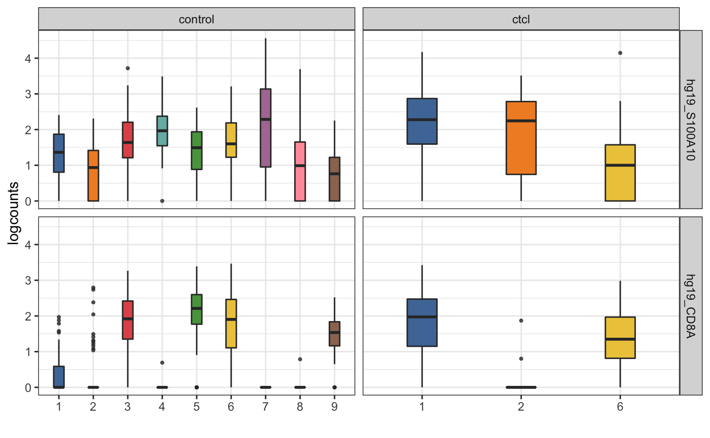
visualiseExprsList(sce_list = list(control = sce_citeseq, ctcl = sce_ctcl_subset), plot = "boxplot", altExp_name = "ADT", feature_subset = c("CD19", "CD8"), group_by = c("SNF_W_louvain", "SNF_W_louvain"))

We can then perform differential expression analysis of the RNA expression level across the two clusters that have high CD19 expression in ADT.
de_res <- DEgenesCross(sce_list = list(control = sce_citeseq, ctcl = sce_ctcl_subset), colData_name = c("SNF_W_louvain", "SNF_W_louvain"), group_to_test = c("2", "6")) de_res_filter <- selectDEgenes(de_res = de_res) de_res_filter #> $control #> stats.W pval p.adjust meanExprs.1 meanExprs.2 #> hg19_GNLY 0.0 2.301890e-18 2.301890e-18 0.07220401 5.193820 #> hg19_EFHD2 67.0 9.718826e-17 9.718826e-17 0.02064028 1.810989 #> hg19_CST7 41.0 1.063099e-16 1.063099e-16 0.22512314 2.884901 #> hg19_NKG7 38.0 2.377913e-16 2.377913e-16 0.51066894 4.283951 #> hg19_GZMB 78.0 4.247635e-16 4.247635e-16 0.11667246 2.646837 #> hg19_PRF1 133.5 5.541530e-15 5.541530e-15 0.06473009 1.974489 #> hg19_ITGB2 110.0 2.714691e-14 2.714691e-14 0.44185664 2.227816 #> hg19_CYBA 101.0 2.944019e-14 2.944019e-14 1.22818319 2.575690 #> hg19_FGFBP2 184.0 4.298063e-14 4.298063e-14 0.03101677 1.769919 #> hg19_IFITM2 126.0 1.227095e-13 1.227095e-13 1.47843667 3.018231 #> meanPct.1 meanPct.2 meanDiff pctDiff name group #> hg19_GNLY 0.02325581 1.0000000 5.121616 0.9767442 hg19_GNLY control #> hg19_EFHD2 0.02325581 0.9423077 1.790349 0.9190519 hg19_EFHD2 control #> hg19_CST7 0.13953488 1.0000000 2.659777 0.8604651 hg19_CST7 control #> hg19_NKG7 0.30232558 1.0000000 3.773283 0.6976744 hg19_NKG7 control #> hg19_GZMB 0.06976744 0.9615385 2.530164 0.8917710 hg19_GZMB control #> hg19_PRF1 0.04651163 0.9038462 1.909759 0.8573345 hg19_PRF1 control #> hg19_ITGB2 0.44186047 0.9615385 1.785960 0.5196780 hg19_ITGB2 control #> hg19_CYBA 0.88372093 1.0000000 1.347507 0.1162791 hg19_CYBA control #> hg19_FGFBP2 0.02325581 0.8461538 1.738903 0.8228980 hg19_FGFBP2 control #> hg19_IFITM2 0.88372093 1.0000000 1.539794 0.1162791 hg19_IFITM2 control #> #> $ctcl #> stats.W pval p.adjust meanExprs.1 meanExprs.2 #> hg19_RPS26 0 6.431902e-17 6.431902e-17 1.48598738 5.072471 #> hg19_CD8B 160 6.208782e-16 6.208782e-16 0.01600345 1.618837 #> hg19_LTB 157 1.064038e-14 1.064038e-14 0.16359138 1.978730 #> hg19_IL7R 247 2.905360e-13 2.905360e-13 0.08949349 1.651591 #> hg19_RPL36A 181 2.328401e-12 2.328401e-12 1.27615800 2.846750 #> hg19_CD3D 300 2.399810e-12 2.399810e-12 0.08958797 1.222056 #> hg19_RPL7 280 3.740249e-10 3.740249e-10 1.47545170 2.618403 #> hg19_LEPROTL1 314 4.234225e-10 4.234225e-10 0.34891667 1.300745 #> hg19_NPM1 291 5.346323e-10 5.346323e-10 1.00758312 2.202268 #> hg19_TMEM123 368 5.569121e-10 5.569121e-10 0.15371329 1.012034 #> meanPct.1 meanPct.2 meanDiff pctDiff name group #> hg19_RPS26 0.86538462 1.0000000 3.5864831 0.1346154 hg19_RPS26 ctcl #> hg19_CD8B 0.01923077 0.8604651 1.6028340 0.8412343 hg19_CD8B ctcl #> hg19_LTB 0.13461538 0.9069767 1.8151388 0.7723614 hg19_LTB ctcl #> hg19_IL7R 0.07692308 0.8139535 1.5620970 0.7370304 hg19_IL7R ctcl #> hg19_RPL36A 0.73076923 1.0000000 1.5705921 0.2692308 hg19_RPL36A ctcl #> hg19_CD3D 0.03846154 0.7906977 1.1324682 0.7522361 hg19_CD3D ctcl #> hg19_RPL7 0.82692308 1.0000000 1.1429510 0.1730769 hg19_RPL7 ctcl #> hg19_LEPROTL1 0.30769231 0.9069767 0.9518288 0.5992844 hg19_LEPROTL1 ctcl #> hg19_NPM1 0.65384615 0.9534884 1.1946849 0.2996422 hg19_NPM1 ctcl #> hg19_TMEM123 0.15384615 0.7674419 0.8583209 0.6135957 hg19_TMEM123 ctcl
Gene - ADT network
The geneADTnetwork function plots an interaction network between genes identified from the DE analysis. The nodes denote proteins and RNA whilst the edges denote positive and negative correlation in expression.
RNA_feature_subset <- unique(as.character(unlist(lapply(rna_DEgenes_all, "[[", "name")))) ADT_feature_subset <- unique(as.character(unlist(lapply(adt_DEgenes_all, "[[", "name")))) geneADTnetwork(sce_citeseq, RNA_feature_subset = RNA_feature_subset, ADT_feature_subset = ADT_feature_subset, cor_method = "pearson", network_layout = igraph::layout_with_fr)
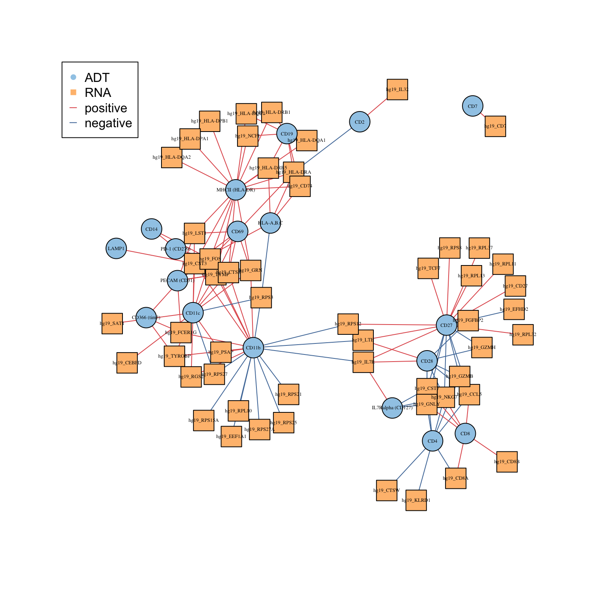
#> IGRAPH 499e405 UN-B 72 134 --
#> + attr: name (v/c), label (v/c), class (v/c), type (v/l), shape (v/c),
#> | color (v/c), size (v/n), label.cex (v/n), label.color (v/c), value
#> | (e/n), color (e/c), weights (e/n)
#> + edges from 499e405 (vertex names):
#> [1] RNA_hg19_IL7R --ADT_CD28
#> [2] RNA_hg19_LTB --ADT_CD28
#> [3] RNA_hg19_NKG7 --ADT_CD28
#> [4] RNA_hg19_CST7 --ADT_CD28
#> [5] RNA_hg19_GNLY --ADT_CD28
#> [6] RNA_hg19_CCL5 --ADT_CD28
#> + ... omitted several edgesFinal notes
A compiled version of the vignette is available on the workshop website.
If you have questions that you could not ask during the workshop, feel free to open an issue on the github repository here.
sessionInfo() #> R version 4.0.2 RC (2020-06-20 r78727) #> Platform: x86_64-apple-darwin17.0 (64-bit) #> Running under: macOS Catalina 10.15.6 #> #> Matrix products: default #> BLAS: /Library/Frameworks/R.framework/Versions/4.0/Resources/lib/libRblas.dylib #> LAPACK: /Library/Frameworks/R.framework/Versions/4.0/Resources/lib/libRlapack.dylib #> #> locale: #> [1] en_AU.UTF-8/en_AU.UTF-8/en_AU.UTF-8/C/en_AU.UTF-8/en_AU.UTF-8 #> #> attached base packages: #> [1] parallel stats4 stats graphics grDevices utils datasets #> [8] methods base #> #> other attached packages: #> [1] gridExtra_2.3 mclust_5.4.6 #> [3] igraph_1.1.0 DT_0.13 #> [5] scater_1.16.1 ggplot2_3.3.2 #> [7] SingleCellExperiment_1.10.1 SummarizedExperiment_1.18.1 #> [9] DelayedArray_0.14.0 matrixStats_0.56.0 #> [11] Biobase_2.48.0 GenomicRanges_1.40.0 #> [13] GenomeInfoDb_1.24.2 IRanges_2.22.2 #> [15] S4Vectors_0.26.1 BiocGenerics_0.34.0 #> [17] CiteFuse_1.0.1 #> #> loaded via a namespace (and not attached): #> [1] Rtsne_0.14 ggbeeswarm_0.6.0 #> [3] colorspace_1.4-1 ellipsis_0.3.1 #> [5] ggridges_0.5.2 rprojroot_1.3-2 #> [7] XVector_0.28.0 BiocNeighbors_1.6.0 #> [9] fs_1.4.1 rstudioapi_0.11 #> [11] farver_2.0.3 graphlayouts_0.7.0 #> [13] ggrepel_0.8.2 RSpectra_0.16-0 #> [15] splines_4.0.2 knitr_1.28 #> [17] heatmap.plus_1.3 polyclip_1.10-0 #> [19] jsonlite_1.6.1 alluvial_0.1-2 #> [21] kernlab_0.9-29 pheatmap_1.0.12 #> [23] uwot_0.1.8 ggforce_0.3.1 #> [25] ExPosition_2.8.23 compiler_4.0.2 #> [27] dqrng_0.2.1 prettyGraphs_2.1.6 #> [29] backports_1.1.8 assertthat_0.2.1 #> [31] Matrix_1.2-18 limma_3.44.3 #> [33] tweenr_1.0.1 BiocSingular_1.4.0 #> [35] htmltools_0.5.0 tools_4.0.2 #> [37] rsvd_1.0.3 gtable_0.3.0 #> [39] glue_1.4.1 GenomeInfoDbData_1.2.3 #> [41] reshape2_1.4.4 dplyr_1.0.0 #> [43] Rcpp_1.0.4.6 pkgdown_1.5.1.9000 #> [45] vctrs_0.3.1 crosstalk_1.1.0.1 #> [47] DelayedMatrixStats_1.10.0 ggraph_2.0.3 #> [49] xfun_0.15 stringr_1.4.0 #> [51] lifecycle_0.2.0 irlba_2.3.3 #> [53] statmod_1.4.34 edgeR_3.30.3 #> [55] zlibbioc_1.34.0 MASS_7.3-51.6 #> [57] scales_1.1.1 tidygraph_1.2.0 #> [59] rhdf5_2.32.1 RColorBrewer_1.1-2 #> [61] SNFtool_2.3.0 yaml_2.2.1 #> [63] memoise_1.1.0 segmented_1.1-0 #> [65] stringi_1.4.6 desc_1.2.0 #> [67] randomForest_4.6-14 scran_1.16.0 #> [69] BiocParallel_1.22.0 rlang_0.4.6 #> [71] pkgconfig_2.0.3 bitops_1.0-6 #> [73] evaluate_0.14 lattice_0.20-41 #> [75] purrr_0.3.4 Rhdf5lib_1.10.0 #> [77] labeling_0.3 htmlwidgets_1.5.1 #> [79] cowplot_1.0.0 tidyselect_1.1.0 #> [81] plyr_1.8.6 magrittr_1.5 #> [83] R6_2.4.1 generics_0.0.2 #> [85] pillar_1.4.4 withr_2.2.0 #> [87] mixtools_1.2.0 survival_3.2-3 #> [89] RCurl_1.98-1.2 tibble_3.0.1 #> [91] crayon_1.3.4 rmarkdown_2.3 #> [93] viridis_0.5.1 locfit_1.5-9.4 #> [95] grid_4.0.2 FNN_1.1.3 #> [97] propr_4.2.6 digest_0.6.25 #> [99] tidyr_1.1.0 dbscan_1.1-5 #> [101] munsell_0.5.0 beeswarm_0.2.3 #> [103] viridisLite_0.3.0 vipor_0.4.5